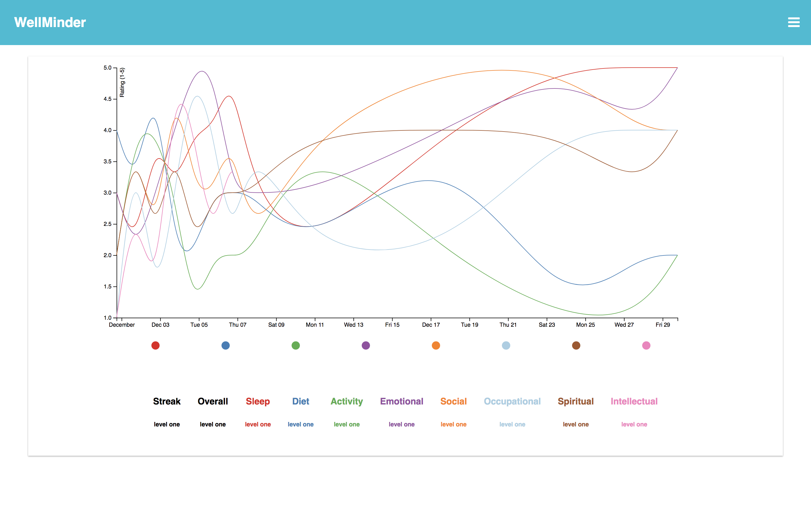

Amanda Freeman
Software Engineer
Projects
Party Pup
A full-stack web app for arranging puppy playdates. Solo project, built in two weeks, during which time I taught myself Angular 5.
Technologies Used: Angular 5, Materialize CSS, AWS, Javascript, Node, Express, PostgreSQL, Knex

WellMinder
A full-stack holistic wellness tracking app that "gamifies" wellness. Created in a week on a team of three people.
Technologies Used: React, D3, Firebase, Javascript, HTML, CSS
About Me
Born and raised in Austin, I've acquired several tattoos and have a passion for craft beer and tacos; I even named my dog Taco! In my free time, I love finding cool dog-friendly places to hang out with my pup, whipping up fun recipes from my favorite food blogs, and binge-watching anime.
I first got into coding as a teenager when I discovered kisekae or KiSS dolls (paperdolls for your computer). I started making KiSS dolls and soon realized I enjoyed the coding part of the process much more than the drawing part. When my favorite KiSS resource became a paid site, I decided to teach myself HTML and start building my own websites to house my dolls. The KiSS community died, but my love of coding remained, and when the opportunity for a career change came up, web development was a natural choice.